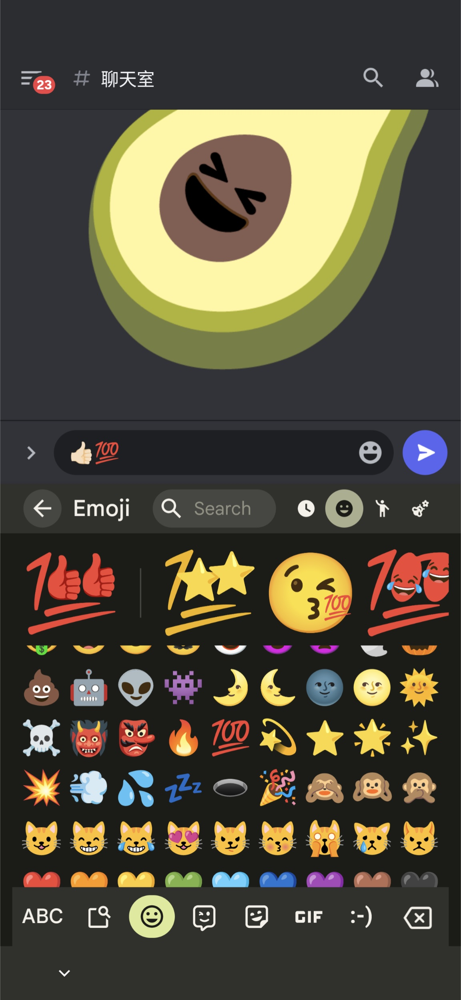

Gboard 鍵盤
Google 在 Android 出的 Gboard 鍵盤上推出 Emoji Kitchen 功能
Gboard Google Play 商店連結：https://play.google.com/store/apps/details?id=com.google.android.inputmethod.latin
簡單來說，在可以傳圖片的地方 (如 Discord)，用 Gboard 鍵盤輸入兩個 emiji 就可以將融合後的圖片傳出去
網頁版
當初只在Gboard 鍵盤上的 Emoji Kitchen 合成功能現在開放網頁版啦
只要在 Google 搜尋 Emoji Kitchen，組合完表情就產生出圖片了
網址：https://www.google.com/search?q=emoji+kitchen


要用時需要將圖片下載下來，或是複製圖片網址使用

</> markdown
|
|
開源版本
在 Google 還沒開放網頁版功能之前，一些熱心開發者也做出類似的網站可以線上使用
這邊介紹 xsalazar/emoji-kitchen
使用時跟 Google 的網頁版一樣，需要將圖片下載下來，或是複製圖片網址使用
GitHub：https://github.com/xsalazar/emoji-kitchen
Emoji Kitchen：https://emojikitchen.dev/